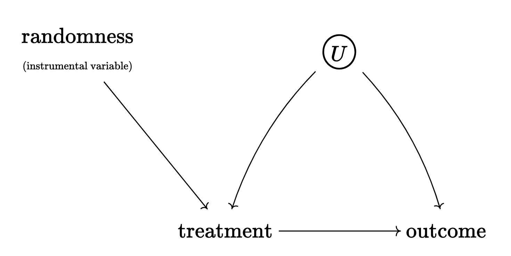

Causality
Here are the major types of research designs associated with causal inference:
Randomized experiments
Adjusting for confounding
Matching/weighting
Difference-in-Differences
Regression discontinuity
Instrumental variables (IV)
The first three strategies rely on the assumption of ignorability (or selection on observables). The last three strategies rely on a slightly different set of assumptions that may be more plausible in certain settings. These last three strategies help us deal with confounding even if we can’t observe any of the confounders (i.e., they can handle unobserved heterogeneity).
A different approach altogether involves assessing the sensitivity of our treatment effect estimates.
Not all people agree about the definition of causality.
One group of people emphasizes intervention or treatment.
NO CAUSATION WITHOUT MANIPULATION
Holland (1986, 959)
These people adopt the so-called potential outcomes framework. Here, the word cause is reserved for things that can be treatments in an experiment, at least in principle. This includes “natural” and “hypothetical” experiments.
Thus, it’s important to distinguish between causes and attributes.
For example:
“She did well on the exam because she is a woman [attribute].”
An attribute cannot be a cause in an experiment; thus, the only way for an attribute to change its value is for the same unit to undergo transformative change.
However, attributes might be central in understanding heterogeneous treatment effects.
“She did well on the exam because she was coached by her teacher [treatment].”
This is OK.
Consider the famous example of musicians auditioning for jobs at orchestras behind screens in order to prevent discrimination. We can think of the binary treatment \(T\) as an indicator of whether the audition was performed behind the screen or not; \(Y\) indicates whether the applicant gets a job offer or not; and we have other background variables \(X\) that cannot be manipulated, like sex. Here, we would most likely care about the interaction between \(T\) and \(X\) (i.e., treatment effect heterogeneity).
Gelman, Hill, and Vehtari (2020) further discuss the importance of defining manipulable “treatment” variables.
…consider the oft-studied “effect” of height on earnings. This effect is ill-defined without reference to the particular treatment that could change one’s height. Otherwise, what does it mean to define a potential outcome for a person that would occur if he or she had been shorter or taller? A hypothetical swapping of genes, for example, would have different effects than a change in the fetal environment, which in turn is different from changing a child’s diet or introducing medication such as growth hormone.
Gelman, Hill, and Vehtari (2020, 414)
Others disagree.
This view leads to other counterintuitive ideas about causation: the moon does not cause the tides, tornadoes and hurricanes do not cause the destruction of property, and so on.
Bollen (1989, 41)
Thus, these researchers believe that manipulation is neither a necessary nor sufficient condition for causality. Bollen (1989, 41) argues that we only need to think about isolation, association, and direction of influence. Pearl (2009) has a similar but more elaborate framework.
Notation
The difference between seeing and doing is enormous. It is the reason why we do not regard movements in a thermostat to be a cause of the temperature outside.
\[ \Pr(Y \mid T) \neq \Pr(Y \mid do(T)) \]
Potential Outcomes
\(T\) is a binary treatment variable. The terms “treatment” and “cause” are used interchangeably.
\(Y\) is the outcome we observe.
\(Y^0\) is the the value the outcome would take if \(T=0\).
\(Y^1\) is the value the outcome would take if \(T=1\).
\(Y^0\) and \(Y^1\) are the potential outcomes.
We see \(Y^0\) or \(Y^1\) for the same unit, but never both. This is the fundamental problem of causal inference.
When \(T=1\), \(Y^0\) is the counterfactual.
When \(T=0\), \(Y^1\) is the counterfactual.
One might object to the fundamental problem of causal inference by noting situations where we can actually measure both \(Y^0\) and \(Y^1\) on the same unit \(i\). For example, we could drink warm milk one evening and coffee another evening, and then measure our amount of sleep time. Holland (1986) refers to this as temporal stability and causal transience. This is the same situation in which we flick the same light switch on and off to figure out if it turns on the light to a room. In other settings, it is perfectly reasonable to assume that \(Y^1_i = Y^1_j\) and that \(Y^0_i = Y^0_j\) (unit homogeneity assumption). For example, this is very common in laboratories that take special care in standardizing the units of an experiment (e.g., mice).
Identification and Causal Diagrams
Identification refers to the idea of identifying the effect of a treatment (or cause) on an outcome.
Causal diagrams or DAGs are graphical representations of a data generating process. Everything we draw is hopefully an informed assumption; everything that’s not in the diagram is also an assumption. In other words, DAGs encode identifying assumptions.
Paths.
Direct effects.
Indirect effects.
Total effects.
Front door paths. They point away from the treatment. If we want to estimate “total effects,” then we want to keep all of them open.
Back door paths. They point towards the treatment; we want to close them off.
Confounding. A property of paths, not of variables.
Colliders. A variable is a collider in a path iff both arrows point at it.
\[ a \to b \to c_\text{ollider} \leftarrow d \leftarrow e \to f \]
Here, \(b\) and \(c\) are unrelated unless we remove variation in \(c\).
In other words, we close paths by removing variation from one variable along the path (i.e., adjusting); but if the variable is a collider, then removing variation will actually open a path that was already closed.
An often unacknowledged way of adjusting for colliders is during the sample selection phase. If we have a sample of college students, it means we are adjusting for college attendance.
Open Path. A path in which there is variation in all variables along the path (and no variation in colliders).
Closed Path. A path in which there is at least one variable with no variation (or a collider with variation).
The idea of a directed acyclical graph (DAG) implies that there are no cycles. If a variable causes itself, it’s near impossible to isolate or identifying the cause of anything. The world is full with feedback loops of all sorts, but we deal with them through the incorporation of time or by isolating one effect through some kind of experimental scenario.
Note that DAGs are agnostic about functional form. This includes interactions among variables! Some people deal with interactions by drawing arrows toward arrows or by representing interactions explicitly as separate nodes.
The nicest thing about DAGs is that they help us spell out the testable implications of our assumptions. For example, if our causal diagram implies that a relationship between variables is zero, we can check for that (this is called a placebo test).
Causal diagrams also help us understand the idea the idea identification doesn’t necessarily require us to take care of all back door paths; sometimes we can use randomization. Sometimes this is achieved in experimental settings, but sometimes we can form some form of randomization in real-world settings (i.e., natural experiments). As depicted in Figure 1, experiments and instrumental variables have equivalent representations in DAGs.
